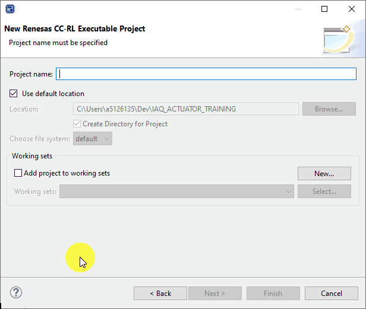
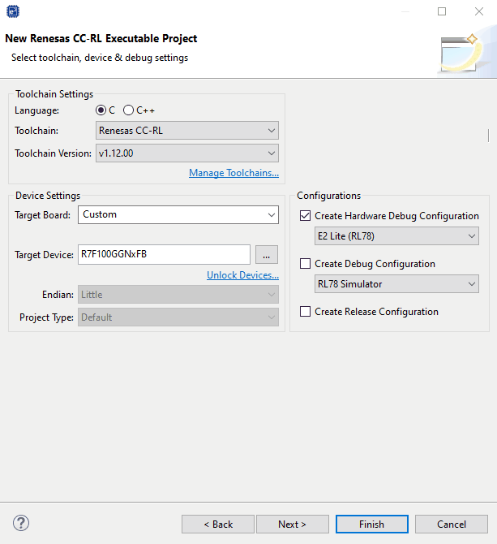

Here we will guide you through creating an empty project for the RL78/G23 Indoor Air Sensor Board, Device: R7F100GFN.
1.1 New Project
After launching e² studio & opening/selecting a workspace, perform the following:
[File] → [New] → [Renesas C/C++ Project] → [Renesas RL78]
1.2 Select Toolchain
The toolchain is another term for the group of tools used in the compilation and debug/binary
manipulation of a program.
The differences in toolchains will not be covered here but a review of each toolchain is
recommended before making a selection for a project.
Importantly though they will all provide the same base features of compilation and debug for the
purpose of this lab.
An observant reader will notice that each toolchain comes in two forms, these are
executable and library.
An executable project will be setup to generate binary/debug images (.elf/.mot/.bin etc.)
which can be flashed to a device and executed (typical).
A library project will be setup to generate a static library (.lib/.a etc.) file which
can be used/linked in other projects, no executable binary
will be generated in a libray project and therefore a library project can not be debugged
directly.
Here we will select an executable project and arbitrarily select the Renesas CC-RL
C/C++ toolchain. Then click Next >.
1.3 Name Project
The project should be given a sensible name. Then click Next >.
1.4 Project Setup
The project now needs some fine tuning. We will perform the following in the setup dialog:
- Select the target device (R7F100GGNxFB).
- Change the hardware debugger to E2 Lite.
Then click Next >.
1.5 Finish Setup
Enable the use of the smart configurator. This tool allows us to configure the device and
generate peripheral drivers and middleware - for readers familiar with the RL78 it is the tool to
sperceed the code generator or applilet tools.
Click Next > then click Finish.

1.6 Loading Dialogs
During project creation the following dialogs may appear.
The security warning can be ignored and the user should select [Install
anyway] - note this may not appear, if it does not then you can skip this dialog step.
And for the "open the Smart Confgurator perspective" dialog the user should
click [Open Perspective].
Opening this perspecitve just means e2studio will initially
present the user with the smart configurator tool for
the project and in the format most suited to using this tool.